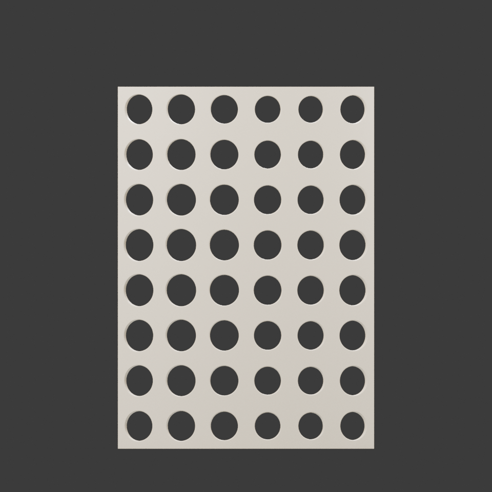
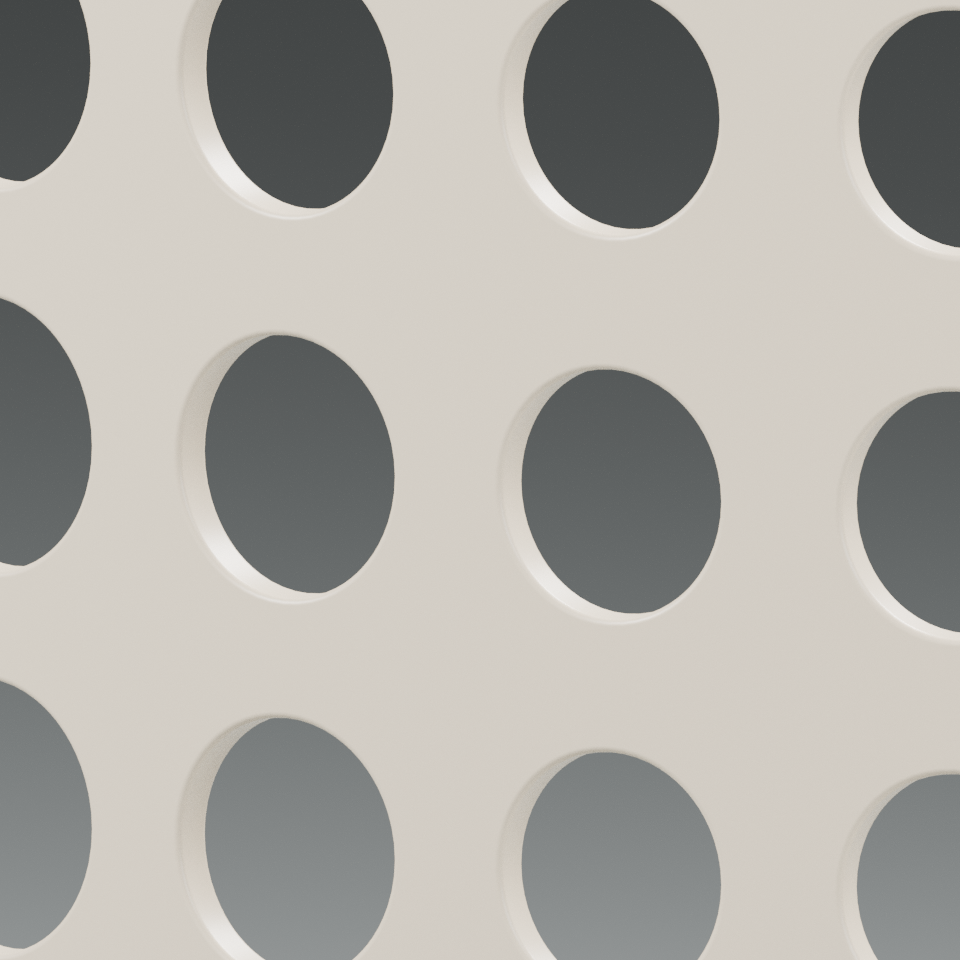
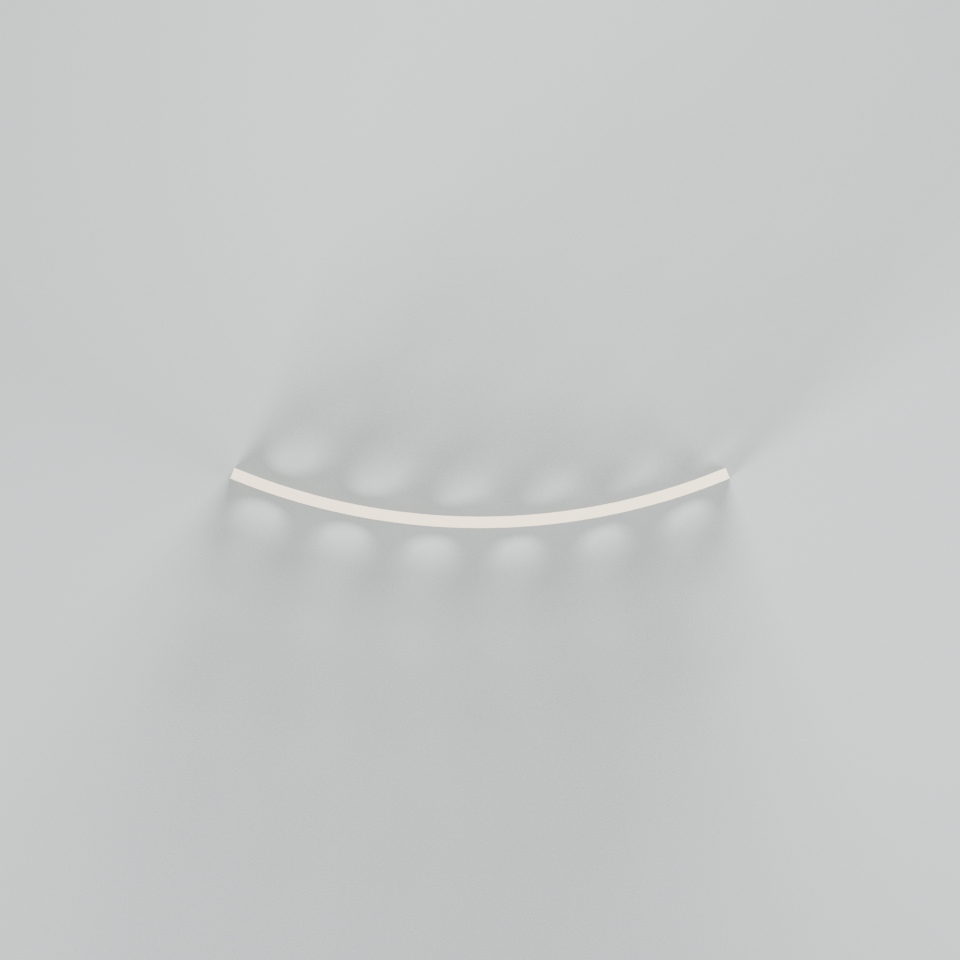

孔洞
孔有前缘、后缘和孔壁。它们不是平面上的深色贴图，而是穿过厚壳的几何通道。
真实正面正交图 / 不等于透光率
A field of apertures / 008
孔，是留出的空处。
幕，是那些没有被挖去的部分。
用一片连续的弯曲厚壳，观察孔洞、遮挡与孔间连料。
原创数字小屏风 / CPU图版 / 不是光学或结构性能测试

图版暂不可用。下方正文、参数与下载仍可阅读。

EDGE STUDY / 孔缘竖幅裁片同一片曲面，可以先读孔的轮廓，再读偏转视角后的遮挡，最后沿孔与孔之间剩下的实体行走。三个问题互相关联，但不能由同一个“开孔率”回答。

孔有前缘、后缘和孔壁。它们不是平面上的深色贴图，而是穿过厚壳的几何通道。
真实正面正交图 / 不等于透光率

角度一变，前后孔缘会重叠。图里看不见的空白，不意味着模型里没有孔。
真实俯视正交图 / 不作光学模拟
连续的实体把孔场连接成一片幕。孔口净空与壳体厚度是两种量，不应混用。
真实孔缘局部图 / 不作强度验收

改变展开比例、曲率与真实开孔。材质语言保持一致，让差别留在形体上。
直立均衡，让孔场与周边留白保持相近的份量。

降低高度、横向展开，曲面也变得更平。

收窄、抬高并加深弯曲，让不同方向的遮挡更明显。
名义展开宽是曲面展开后的输入尺寸，不等于模型包围盒宽；圆心角是名义曲率控制。¹下界来自实际前/后孔口折线之间、孔口到同侧外缘的3D欧氏净空取样，扣除两端覆盖半径及数值余量，展示时向下保留两位毫米小数；不代表孔内壁全域最薄或测地距离，更不构成可制造、抗冲击或安全的保证。²解析孔口面积比＝光滑孔口足迹面积/中面展开矩形面积；不是三角网格实测面积、投影可见率、孔隙率或透光率。
模型、参数、生成源和网页评审分别保留。漂亮的孔场不是门禁；一次“通过”也不覆盖所有层级。